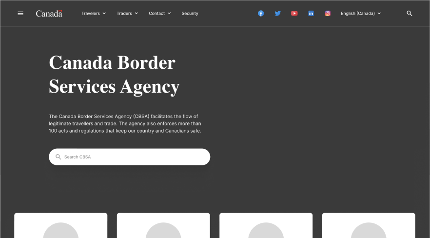

The problem
CBSA, which stands for Canada Border Services Agency, ask me to redesign their website. It was found that CBSA website's main problem was lack of information hierarchy. The site's organization and navigation systems were far from polished, resulting in a misleading and unpleasant browsing experience.
Scope
The project aimed to redesign the most impactful parts of the site, including
- Homepage
- Main navigation
- Footer
- Secondary pages
Contribution
My role and responsibilities are multi-disciplinary throughout this project
- UX researcher: conduct research and analysis on the current CBSA website including preliminary research, definition of proto-persona, heuristics evaluation, and usability testing.
- IA architect: Reordered the information architecture of CBSA's navigation and sitemap.
- UI designer: Draft low-fidelity user interface for redesigned solution
- UX designer: Create high-fidelity interactive prototype for redesigned solution
- QA and tester: Conduct usability tests on wireframes and protoypes and iterate based on feedback.
Deliverables
Information architecture diagram
User-flow diagram
Style guide and design system

Final design: UI specs and hi-fi prototype